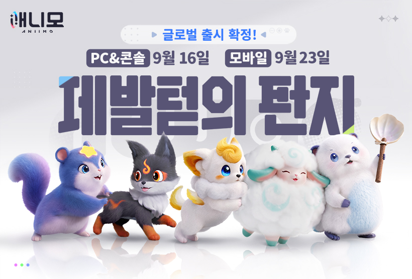
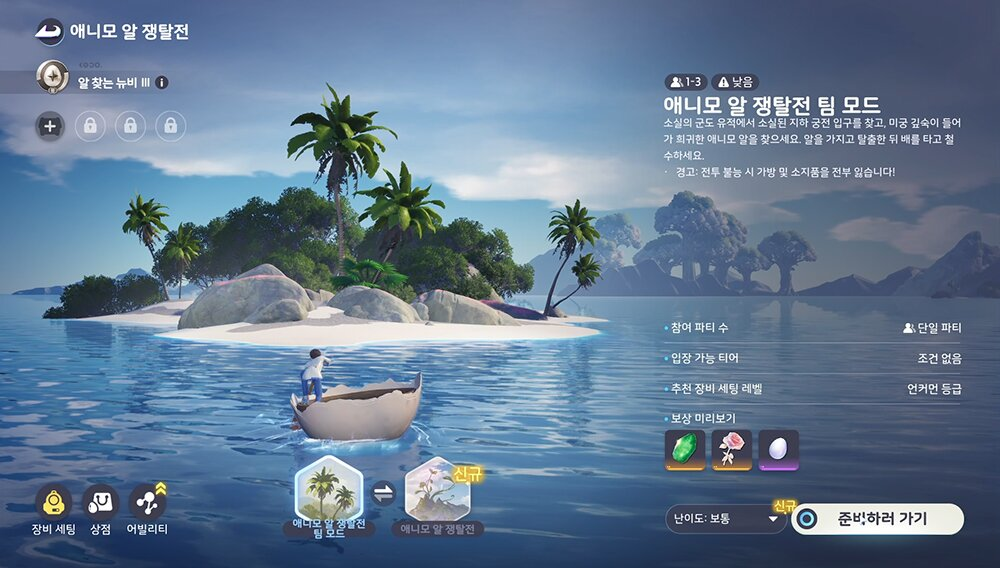

애니모 알쟁탈전 홀로그램협동전 정리, 정식출시 앞두고 달라지는 점까지
애니모 정식 출시가 이번 주 수요일인 2026년 9월 16일(수)로 코앞인데요, 사전예약 관련 소식을 찾아보신 분들이라면 포획이나 육성 얘기는 이미 여기저기서 많이 보셨을 거예요. 근데 막상 다른 유저랑 같이 즐기는 콘텐츠는 의외로 덜 알려져 있더라고요. 그래서 오늘은 애니모의 '알 쟁탈전'이랑 '홀로그램 협동전', 이 두 가지 멀티플레이 콘텐츠만 콕 집어서 정리해볼까 합니다.
참고로 애니모는 파우프린트 스튜디오(FunPlus 산하)가 만드는 멀티플레이 오픈월드 몬스터 포획 RPG고, 사전예약은 벌써 2,800만을 넘겼다고 하더라고요. PC·콘솔·클라우드 게이밍은 2026년 9월 16일(수), 모바일은 2026년 9월 23일(수)에 나란히 정식 출시하는데요. 그러니까 오늘(2026년 9월 13일(일)) 기준으로는 딱 D-3인 셈이죠. 이 2,800만이라는 숫자도 그냥 나온 게 아니라, 지난 8월 26일 독일 쾰른에서 열린 게임스컴에서 정식 출시 일정 발표랑 같이 공개된 수치라 더 눈에 띄더라고요.

출처: 애니모 공식 사이트
PC·콘솔은 9월 16일, 모바일은 9월 23일. 애니모 공식 배너에도 이 출시일이 딱 박혀 있더라고요.
포획이나 육성, 트와인 같은 얘기는 다른 채널에서도 많이 다뤄졌으니까, 이번엔 겹치지 않게 여러 명이서 같이 즐기는 멀티플레이 콘텐츠 두 개만 딱 골라서 살펴볼게요. 덧붙이면 인벤이 이 두 콘텐츠를 처음 취재한 건 지난 7월 9일부터 25일까지 진행된 2차 베타 테스트 기간이었는데, 한정된 인원만 참여할 수 있었던 비공개 테스트였어요.
애니모 알 쟁탈전이 뭔가요
애니모 알 쟁탈전은 다른 유저들과 팀을 이뤄서 함께 도전하는 PVP성 익스트랙션(추출) 콘텐츠예요. 게임 매체 인벤이 지난 7월 CBT 당시 직접 체험해보고 전한 내용을 보면, 여러 플레이어가 한 팀으로 뭉쳐서 자원을 확보하고 빠져나오는 방식의 콘텐츠가 그때부터 이미 마련돼 있었다고 하더라고요. '익스트랙션'이라는 장르 자체가 원정을 나가서 뭔가를 챙기고 무사히 돌아오는 게 핵심이다 보니, 다른 팀이랑 부딪힐 수도 있는 긴장감이 있는 콘텐츠라고 보시면 될 것 같아요.

출처: 인벤 체험기
인벤이 CBT 때 담아온 알 쟁탈전 팀 모드 화면이에요. 참여 인원이나 난이도 같은 수치는 이때 기준이라 정식판에서는 달라질 수 있어요.
홀로그램 협동전은 또 뭔가요
홀로그램 협동전은 정해진 시간 안에 덩치 큰 보스급 몬스터 한 마리를 다 같이 몰아붙여서 쓰러뜨려야 하는, 도전 요소가 강한 협동형 콘텐츠예요(공식 명칭이 '홀로그램 협동전'이니 이대로 기억해두시면 돼요). 인벤 체험기에서도 정해진 시간 내에 센 보스급 몬스터를 무너뜨려야 하는 협력 도전 콘텐츠가 있다고 소개했더라고요. 알 쟁탈전이 유저끼리 경쟁하는 느낌이라면, 홀로그램 협동전은 같은 편끼리 힘을 모아 보스를 잡는 쪽에 가깝다고 보시면 돼요.
제한 시간 안에 보스를 잡아야 하는 홀로그램 협동전이에요.
정식판에서는 이 두 콘텐츠가 얼마나 달라지나요
여기서부터가 오늘 진짜 하고 싶은 얘기인데요, 정식판에서는 이 두 콘텐츠가 CBT 때보다 훨씬 커진다는 게 최근에 공식으로 확인됐어요. 애니모 공식 뉴스센터에 2026년 9월 3일(목) 올라온 개발팀의 편지에서 직접 밝힌 내용인데, 알 쟁탈전은 얻을 수 있는 알 종류를 늘리고 어려운 난이도의 새 모드를 추가하는 쪽으로 손을 봤고, 홀로그램 협동전은 새로운 도전 콘텐츠랑 AI 동료의 전투 지원 기능을 더했다고 해요. 표로 한 번 정리해볼게요.
| 콘텐츠 | 정식판에서 달라지는 점 |
|---|---|
| 알 쟁탈전 | 획득 가능한 알 종류 확대 · 고난이도 '카오스 모드' 신설 · PVP 이벤트 모드 지속 개선 |
| 홀로그램 협동전 | '모험가 재도전' 콘텐츠 신설 · AI 동료 전투 지원 기능 추가 |
정리하면, 알 쟁탈전에는 '카오스 모드'라는 고난이도 콘텐츠가 새로 생기고, 홀로그램 협동전에는 AI 동료가 전투를 도와주는 기능이 붙는 거예요. CBT 때 인벤이 취재했던 그 콘텐츠들이 사라지지 않고, 오히려 출시를 앞두고 더 단단해진 셈이라 개인적으로는 반가운 소식이었어요.
팀 인원수나 제한 시간 같은 세부 규칙은 아직 안 나왔나요
네, 아쉽게도 몇 명이서 팀을 짜는지, 제한 시간이 정확히 몇 분인지, 보상으로 뭘 주는지 같은 세부 규칙은 아직 공식적으로 공개되지 않았어요.🔍 출시 후 확인 필요 인벤 체험기도, 개발팀의 편지도 두 콘텐츠가 '있다'와 '이렇게 바뀐다'까지만 얘기했지, 구체적인 진행 방식까지는 다루지 않았거든요. 괜히 짐작해서 숫자를 적었다가 실제랑 다르면 더 헷갈리실 것 같아서, 이 부분은 정식 출시하고 나서 직접 들어가 확인하는 걸 추천드려요.
애니모 알 쟁탈전 홀로그램 협동전 자주 묻는 질문
Q. 카오스 모드는 알 쟁탈전 안에 따로 있는 모드인가요?
네, 카오스 모드는 알 쟁탈전 안에 새로 추가되는 고난이도 모드예요. 개발팀의 편지에서 처음 공개됐고, 구체적인 난이도나 조건은 아직 안 나왔어요.
Q. 홀로그램 협동전에 추가된 AI 동료는 어떤 역할을 하나요?
개발팀의 편지에는 '전투 지원 기능을 더했다'고만 나와 있어서, 정확히 어떤 방식으로 도와주는지는 출시 후 확인이 필요해요.
Q. 알 쟁탈전이랑 홀로그램 협동전, 플랫폼 상관없이 같이 할 수 있나요?
애니모 자체가 PC·콘솔·모바일·클라우드를 오가는 크로스 플랫폼 멀티플레이를 지원한다고 소개돼 있어서, 두 콘텐츠도 플랫폼 가리지 않고 참여할 수 있을 걸로 보여요. 다만 매칭이 어떻게 되는지 세부 방식은 아직 확인 전이에요.
Q. '모험가 재도전' 콘텐츠는 뭔가요?
개발팀의 편지에 새로 추가된다고 이름만 언급된 콘텐츠예요. 어떤 방식으로 재도전하는 건지는 아직 공식 설명이 없어요.
Q. PVP 이벤트 모드도 알 쟁탈전이랑 같은 콘텐츠인가요?
개발팀의 편지를 보면 알 쟁탈전이랑 PVP 이벤트 모드를 따로 언급하고 있어서, 이름상으로는 별개 콘텐츠일 가능성이 있어요. 다만 명확한 구분은 공식에서 설명하지 않아 확인이 필요해요.
애니모 알 쟁탈전 홀로그램 협동전 정리
한마디로, 알 쟁탈전이랑 홀로그램 협동전 둘 다 CBT 때 있던 콘텐츠를 없애지 않고, 오히려 정식판에서 카오스 모드랑 AI 동료까지 얹어서 더 단단하게 다듬은 셈이더라고요. 팀 인원수나 제한 시간 같은 세부 규칙은 출시 후에 다시 확인해서 알려드릴게요. 그리고 애니모 서버는 AP·NA·EU, 이렇게 국제 서버 3구역으로 나뉘어 있다고 하니까 알 쟁탈전이나 홀로그램 협동전 같은 멀티플레이 콘텐츠도 아마 이 서버 구역 단위로 진행될 걸로 보여요. 알 모으기든 보스 사냥이든 협동해서 노는 걸 좋아하시는 분들이라면, 출시하자마자 한 번씩 들여다보시면 좋을 것 같아요.
✔ 애니모 같이 보기 좋은 내용
· 애니모 인게임 플레이 트레일러 공개, CBT 테스트 권장 사양 체크
참고한 곳
· 애니모 공식 뉴스센터 - 개발팀의 편지
· 애니모 공식 사이트